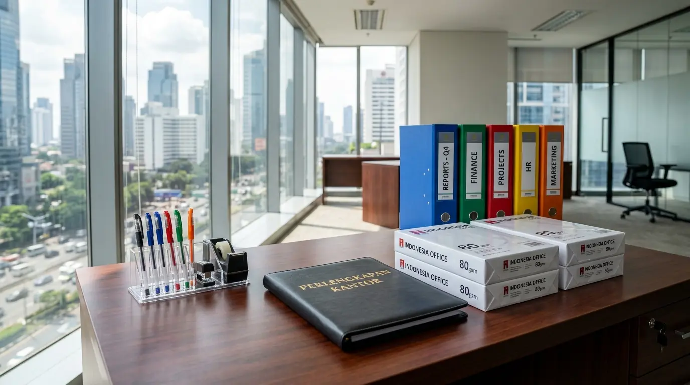

Mengapa Perusahaan Membutuhkan Supplier ATK Terdekat Jakarta untuk Pengadaan Rutin?
Perusahaan membutuhkan supplier ATK terdekat Jakarta untuk pengadaan rutin karena jarak lokasi penyedia yang dekat menjamin kecepatan waktu pengiriman, meminimalisir biaya ongkos kirim armada, serta memberikan kepastian respon layanan saat terjadi kehabisan stok barang secara mendadak. Berdasarkan data Jakarta Procurement & Logistics Survey 2025-2026, perusahaan yang mengikat kontrak bersama penyedia lokal terdekat berhasil menghemat biaya pengiriman bulanan hingga 32,8% dibanding pemesanan eceran luar kota. Laporan Commercial Corporate Supply Study 2025 juga mencatat bahwa 86% manajer pengadaan di kawasan perkantoran Jakarta mengutamakan kejelasan stok fisik dan kecepatan distribusi sameday untuk menjaga kontinuitas administrasi.
Memilih mitra pasokan alat tulis kantor tidak boleh dilakukan secara acak tanpa memperhitungkan aspek keterjangkauan lokasi dan fleksibilitas transaksi B2B. Hambatan distribusi dapat memicu penghentian aktivitas pencetakan dokumen, proses penandatanganan kontrak B2B, dan pengarsipan berkas. Oleh karena itu, membangun kerja sama pasokan bersama distributor resmi Perlengkapan Kantor yang berbasis di Jakarta merupakan solusi taktis untuk menjamin efisiensi kerja seluruh divisi perusahaan Anda.
Tabel perbandingan berikut menunjukkan efisiensi bermitra dengan penyedia lokal dibanding pengadaan eceran:
| Parameter Evaluasi | Supplier ATK Terdekat Jakarta | Pembelian Eceran Non-Kontrak |
|---|---|---|
| Kecepatan Pengiriman | Prioritas Utama (Sameday / 24 Jam) | Bervariasi (2 - 5 Hari Kerja) |
| Harga Satuan Barang | Diskon Grosir B2B Berkelanjutan | Harga Eceran Toko Normal |
| Metode Pembayaran | Terms of Payment (Kredit 30 Hari) | Tunai Langsung / Transfer Depan |
| Konsistensi Stok Barang | Garansi Ketersediaan Stok Rutin | Tergantung Stok Toko Eceran |
- Pengadaan dari supplier terdekat menghemat biaya kirim hingga 32,8%.
- 86% manajer pengadaan di Jakarta mengutamakan kecepatan distribusi sameday.
- Kontrak rutin dengan supplier lokal memastikan stok selalu tersedia.
Apa Saja Layanan Unggulan yang Wajib Disediakan Supplier ATK Profesional?
Layanan unggulan yang wajib disediakan supplier ATK profesional meliputi pengiriman barang gratis ongkir area Jakarta, pemesanan kustomisasi sistem B2B portal, ketersediaan sampel fisik sebelum transaksi massal, serta jaminan penggantian barang cacat produksi tanpa biaya tambahan.
Fasilitas pendukung utama yang menguntungkan pembeli korporat:
- Layanan Bebas Biaya Kirim: Pengantaran armada khusus tanpa biaya pengiriman tambahan untuk volume pemesanan tertentu.
- Fasilitas Terms of Payment (TOP): Skema pembayaran tempo hingga 30 hari yang fleksibel bagi pencatatan akuntansi.
- Ketersediaan Katalog Produk Lengkap: Menyediakan ribuan item mulai dari kertas HVS, pen, ordner, hingga aksesori meja.
- Tim Layanan Pelanggan Khusus (Dedicated Account Manager): Membantu proses pemesanan ulang harian secara praktis dan cepat.
- ✅ Pengiriman gratis ongkir area Jakarta.
- ✅ Sistem pemesanan B2B portal yang mudah.
- ✅ Sampel fisik tersedia sebelum transaksi massal.
- ✅ Jaminan penggantian barang cacat produksi.
- ✅ Dedicated Account Manager untuk pemesanan rutin.
Bagaimana Langkah-Langkah Mengatur Jadwal Pengadaan ATK Rutin Kantor?
Langkah-langkah mengatur jadwal pengadaan ATK rutin kantor diawali dengan melakukan audit pemakaian stok bulanan, menentukan batas stok minimum (safety stock), menyusun daftar belanja terstandarisasi, serta mengajukan lembar pemesanan (PO) kepada distributor resmi.
Prosedur pengadaan terstruktur yang efektif:
- Menghitung Rata-rata Konsumsi Bulanan: Menganalisis jumlah kertas dan alat tulis yang dihabiskan tiap staf per bulan.
- Mengelompokkan Kategori Barang: Memisahkan item esensial berfrekuensi tinggi seperti Kertas HVS dan bolpoin dari barang sekunder.
- Mengunci Kesepakatan Harga Kontrak: Mengikat perjanjian harga tetap selama 6 hingga 12 bulan untuk menghindari fluktuasi harga pasar.
- Penerimaan dan Verifikasi Fisik: Memeriksa kesesuaian jumlah dan spesifikasi barang saat pengantaran tiba di gedung kantor.
Untuk mengamankan pasokan konsumabel administrasi perusahaan Anda, hubungi tim penyedia Perlengkapan Kantor kami sekarang dan dapatkan penawaran harga grosir B2B terbaik.
Faktor Apa Saja yang Memengaruhi Kualitas Produk Alat Tulis Kantor?

Supplier Perlengkapan Kantor menyediakan pasokan alat tulis lengkap dengan jaminan produk original dan harga grosir kompetitif.
Faktor yang memengaruhi kualitas produk alat tulis kantor meliputi ketebalan gramatur kertas, kelancaran aliran tinta pena, ketahanan engsel penjepit ordner, serta kerapian kemasan dari pabrik produsen. Produk alat tulis berstandar rendah riskan merusak printer saat proses cetak atau macet saat digunakan untuk penandatanganan berkas penting.
Memastikan seluruh produk berasal dari produsen resmi adalah kunci menjaga mutu operasional harian. Bekerja sama bersama distributor Perlengkapan Kantor menjamin Anda memperoleh barang original bergaransi sah.
- Pilih kertas HVS dengan gramatur 70-80 gsm untuk hasil cetak optimal.
- Gunakan pena dengan tinta berkualitas untuk dokumen penting.
- Pastikan ordner memiliki engsel baja yang kokoh dan tahan lama.
Pertanyaan Populer Seputar Supplier ATK Terdekat Jakarta
Kesimpulan Praktis
Bermitra bersama supplier ATK terdekat Jakarta untuk pengadaan rutin perusahaan merupakan strategi tepat dalam menciptakan efisiensi anggaran, mengamankan ketersediaan stok konsumabel kantor, dan mempermudah administrasi operasional. Didukung oleh pasokan lengkap dan layanan pengantaran cepat dari Perlengkapan Kantor, seluruh urusan sarana kerja bisnis Anda siap terpenuhi secara sempurna.

Penulis: Ardhana Prasasta
Spesialis konten & konsultan furnitur tata ruang kantor di Perlengkapan Kantor. Berpengalaman dalam memberikan panduan solusi ergonomis, efisiensi ruang kerja, dan pengadaan perlengkapan kantor korporat.